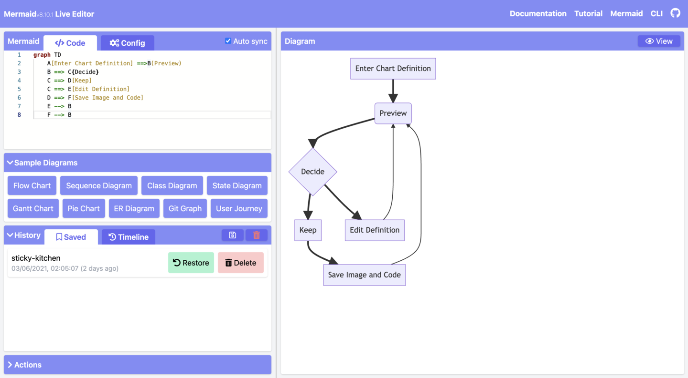

Warning
THIS IS AN AUTOGENERATED FILE. DO NOT EDIT.
Please edit the corresponding file in /packages/mermaid/src/docs/intro/getting-started.md.
Mermaid User Guide
Mermaid is composed of three parts
- Deployment
- Syntax
- Configuration
This section talks about the different ways to deploy Mermaid.
If you are a beginner:
- Check out the Diagram Syntax page
- Check out the Tutorials page
Ways to use Mermaid
- Using the Mermaid Live Editor
- Using the Mermaid Chart Editor
- Using Mermaid Plugins and Integrations
- Calling the Mermaid JavaScript API
- Adding Mermaid as a dependency
To learn more, visit the Usage page.
1. Using the Mermaid Live Editor
Available at the Mermaid Live Editor website.
Features
• Diagram Code
In the Code panel, write or edit Mermaid code, and instantly Preview the rendered result in the diagram panel.
Here is an example of Mermaid code and its rendered result:
graph TD
A[Enter Chart Definition] --> B(Preview)
B --> C{decide}
C --> D[Keep]
C --> E[Edit Definition]
E --> B
D --> F[Save Image and Code]
F --> B
graph TD
A[Enter Chart Definition] --> B(Preview)
B --> C{decide}
C --> D[Keep]
C --> E[Edit Definition]
E --> B
D --> F[Save Image and Code]
F --> B
• Configurations
Configuration options are available in the Configuration panel. The options are applied to the diagram in the Preview panel.
To learn more, visit the Configuration Reference page

• Editing History
Your code will be autosaved and appear in the Timeline tab of the History section. Edits are saved every minute and only the last 30 edits are viewable.
Alternatively, you can manually save code by clicking on the Save icon from the History section.
Note History is stored in the browser storage only.
• Saving a diagram
There are multiple ways of saving your diagram from the Actions section:
- export PNG
- export SVG
- export as Markdown

• Editing your diagrams
To edit your diagram, you can copy paste existing Mermaid diagram code into the Code section of the Live Editor.
Or:
- create a new diagram from scratch
- use a Sample Diagram from the
Sample Diagramssection
• Loading from Gists
The Gist you create should have a code.mmd file and optionally a config.json, similar to this example.
Note To learn about Gists, visit the GitHub documentation page on Creating gists.
Once you have created a Gist, copy paste the Gist URL into the respective field in the Actions section and click on the Load Gist button.
Here is an example of a Gist being loaded into the Editor:
https://mermaid.live/edit?gist=https://gist.github.com/sidharthv96/6268a23e673a533dcb198f241fd7012a
And, here is the diagram view from the above example:
https://mermaid.live/view?gist=https://gist.github.com/sidharthv96/6268a23e673a533dcb198f241fd7012a
2. Using the Mermaid Chart Editor
Available at the Mermaid Chart website.
Mermaid Chart is a web-based diagram editor that allows you to create and edit diagrams in your browser. It is built by the team behind Mermaid.
Features include:
- AI diagramming
- Collaboration & multi-user editing
- Storage
- and more
To learn more, visit the Mermaid Chart page in the Ecosystem section of the documentation.
Or go to the Mermaid Chart website to sign up for a Free account.
3. Using Mermaid Plugins
Mermaid Plugins
You can generate Mermaid diagrams from within popular applications using plug-ins.
For a list of Mermaid Plugins and Integrations, visit the Integrations page.
Mermaid Chart Plugins
Mermaid Chart plugins are available for:
To learn more, visit the Mermaid Chart Plugins page.
Native Mermaid Support
For apps that support markdown (e.g. GitHub and GitLab), you can add Mermaid diagrams by making a mermaid code block.
The following code-block will be rendered as a Mermaid diagram:
```mermaid
flowchart LR
A --> B
```
4. Calling the Mermaid JavaScript API
This method can be used with any common web server like Apache, IIS, Nginx, and Node Express.
You will also need a text editing tool like Notepad++ to generate an html file. It is then deployed by a web browser, i.e. Firefox, Chrome, Safari.
Note Internet Explorer is not supported.
The API works by pulling rendering instructions from the source mermaid.js in order to render diagrams on the page.
Requirements for the Mermaid API
When writing the html file, we give two instructions inside the html code to the web browser:
a. The Mermaid code for the diagram we want to create.
b. The importing of the Mermaid library through the mermaid.esm.mjs or mermaid.esm.min.mjs, and the mermaid.initialize() call, which dictates the appearance of diagrams and also starts the rendering process.
Examples
- This is an example of an embedded Mermaid diagram definition inside a
<pre class="mermaid">:
<body>
Here is a mermaid diagram:
<pre class="mermaid">
graph TD
A[Client] --> B[Load Balancer]
B --> C[Server01]
B --> D[Server02]
</pre>
</body>
Note Every Mermaid chart/graph/diagram definition should have separate
<pre>tags.
- This is an example of a Mermaid import and the
mermaid.initialize()call.
Note A
mermaid.initialize()call takes all the definitions contained within<pre class="mermaid">tags and renders them into diagrams.
<body>
<script type="module">
import mermaid from 'https://cdn.jsdelivr.net/npm/mermaid@11/dist/mermaid.esm.min.mjs';
mermaid.initialize({ startOnLoad: true });
</script>
</body>
Note Rendering in Mermaid is initialized by the
mermaid.initialize()call. However, doing the opposite lets you control when it starts looking for<pre>tags inside the web page withmermaid.initialize(). This is useful when you think that not all<pre>tags may have loaded on the execution ofmermaid.esm.min.mjsfile.
startOnLoad is one of the parameters that can be defined by mermaid.initialize()
| Parameter | Description | Type | Values |
|---|---|---|---|
| startOnLoad | Toggle for Rendering upon loading | Boolean | true, false |
In this example, the mermaidAPI is being called through the CDN:
<html>
<body>
Here is one mermaid diagram:
<pre class="mermaid">
graph TD
A[Client] --> B[Load Balancer]
B --> C[Server1]
B --> D[Server2]
</pre>
And here is another:
<pre class="mermaid">
graph TD
A[Client] -->|tcp_123| B
B(Load Balancer)
B -->|tcp_456| C[Server1]
B -->|tcp_456| D[Server2]
</pre>
<script type="module">
import mermaid from 'https://cdn.jsdelivr.net/npm/mermaid@11/dist/mermaid.esm.min.mjs';
mermaid.initialize({ startOnLoad: true });
</script>
</body>
</html>
In this example, mermaid.js is referenced in src as a separate JavaScript file:
<html lang="en">
<head>
<meta charset="utf-8" />
</head>
<body>
<pre class="mermaid">
graph LR
A --- B
B-->C[fa:fa-ban forbidden]
B-->D(fa:fa-spinner);
</pre>
<pre class="mermaid">
graph TD
A[Client] --> B[Load Balancer]
B --> C[Server1]
B --> D[Server2]
</pre>
<script type="module">
import mermaid from 'The/Path/In/Your/Package/mermaid.esm.mjs';
mermaid.initialize({ startOnLoad: true });
</script>
</body>
</html>
5. Adding Mermaid as a dependency
Below are the steps for adding Mermaid as a dependency:
- Install
node v16
Note To learn more about downloading and installing
Node.jsandnpm, visit the npm Docs website.
-
Install
yarnusingnpmwith this command:npm install -g yarn -
After yarn installs, enter this command:
yarn add mermaid -
To add Mermaid as a dev dependency, enter this command:
yarn add --dev mermaid
Closing note
Note Comments from Knut Sveidqvist, creator of Mermaid:
- In early versions of Mermaid, the
<script>tag was invoked in the<head>part of the web page. Nowadays, we can place it in the<body>as seen above. Older parts of the documentation frequently reflect the previous way, which still works.